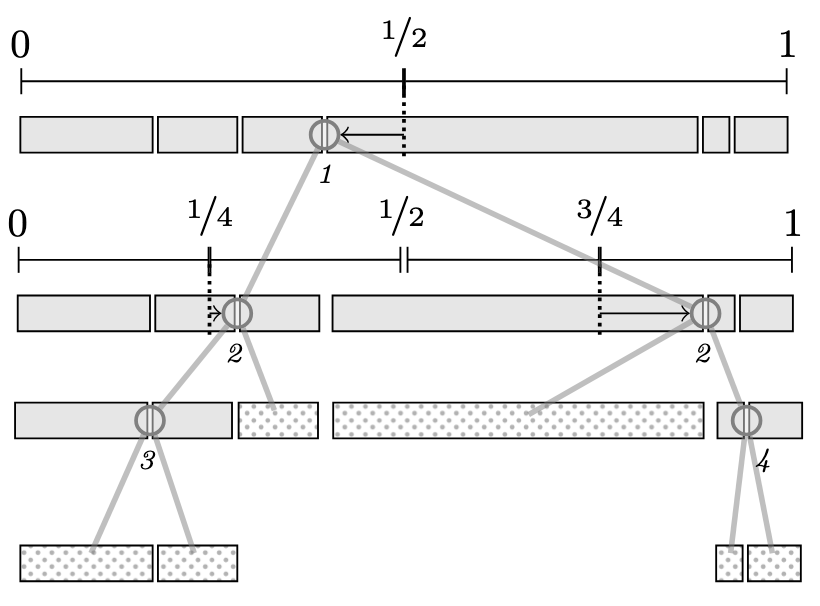

Software
This is an overview of public software I’ve worked on. Most of my non-public work has been in data/ML using Python.
major
-
Powersort
Together with Prof. Sebastian Wild, I implemented and benchmarked the Powersort algorithm for NumPy. In particular for large arrays (length above 10,000), we could see a noticeable speedup, nearly halving the running time for some instances.
The original 2018 paper gives the theoretical background, and I'm writing a blog post to explain Powersort and related concepts.

-
MathCAT
MathCAT translates MathML into speech strings and braille, and it is used in assistive technologies including NVDA and JAWS to make mathematics accessible to blind people. MathCAT is governed by DAISY.org.
I work on the Rust code base itself and on Python tooling around localization progress for translations and rules.
(I got into this domain from my uni side job at Math4VIP. MathCAT is continuously open to help from other engineers)
minor
-
FixCon
implementation and benchmark of a optimization framework for algorithms research. -
Sipura
a library of graph algorithms that is based on tooling needed for my Bachelor thesis, and has been used for some theses since. Unlike many similar libraries, it documents each implementations runtime complexity. -
Solver for Vertex Cover
Winning entry from a hackathon during undergrad.